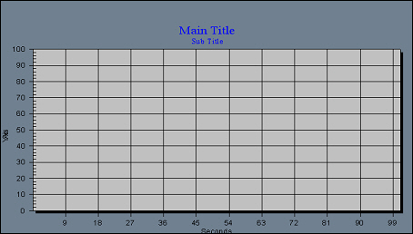

iTest User's Guide
The ADT Stripchart display object graphically plots the status of selected database channels over time. Channel values display as a series of scrolling lines, in the strip chart.
ADT Strip Chart

General Tab
| Option | Description |
| Main Title | Text that becomes the title at the top of the ADTStripChart. |
| Subtitle | Type the text that displays as the subtitle, under the title, at the top of the ADTStripChart. |
| Label Field | Select a label for the ADTStripChart. The default is Automatic. If an Alias, Customer Name, Module Name, or Description was not defined for a database channel in its channel definition, the database channel name displays by default. |
| Grid | Select the type of grid, if any, that displays on the ADTStripChart. |
| Control ID | Unique name for the control assigned by the application. This name can be used in mailslot messages to change control properties during runtime on the iTest Console. If you have multiple strip charts that will be updated programmatically, each will need a unique Control ID. |
| Permit Runtime Changes | Allows changes to be made programmatically. |
| Show Digital Values | When selected this will show values on the legend. |
Axes Tab
| Option | Description |
| Channels | Lists the channels that display on the ADTStripChart. Click the Channel... button below this field to open the Channel Selection dialog, which you can use to select the database channels whose names and values display on the ADTStripChart. |
| Channel Button | Allows you to add a new channel. |
| Delete Button | Deletes the database channel selected in the Channels list. |
| Y Axis Min | Specify the minimum value for plotting on the Y axis for the channel selected in the Channels list. If this is disabled, click a channel name. |
| Y Axis Max | Specify the maximum value for plotting on the Y axis for the channel selected in the Channels list. If this is disabled, click a channel name. |
| X Axis Size (seconds) | Specify the number of seconds to display on the X axis. Note that 100 scans in a 100-Hz system displays data for the previous second. |
| Scroll Buffer Pages | Specify the number of pages of data that you want to buffer while the strip chart is active. You can then scroll back through this historical data. |
| Memory Use (bytes) | Read-only field. Indicates the amount of memory used to store the Scroll Buffer Pages. |
| X Axis Size (data points) | This is the number of horizontal samples displayed by the strip chart (including on buffer pages). |
| Sample Rate | Rate at which the signal(s) in the strip chart being drawn is sampled (in Hz). |
These properties are useful when issuing the following mailslot message:
\\.\mailslot\DisplayName>>$SETITEMPROPERTY ControlID PropertyName PropertyValue
The following are the names of the properties that can be changed by mailslot message to the display. These property names may or may not be the same as the property names shown on the display object property setup dialogs. Most of these property names are self-explanatory. The first column is the data type of the property.
The int or OLE_COLOR for color is the color RGB values. “BSTR” means the type of the property is string. “int”, “float”, “long”, “short”, “double” means the type of the property is number. “Boolean” means the property value should be 1 or 0.
Font property syntax is complicated.
<font name>,<bold>,,<italic>,<font size>,,<strikeout>,<underline>,
example: Arial,0,0,0,97500,0,0,0,400
ADT Stripchart Object Properties
| Type | Property | Notes |
| string | ChannelName | - |
| string | LabelField* | values are case-sensitive |
| float | Rate | - |
| bool | ChangesOK | - |
| long | Points | not implemented |
| long | AproxMemSize | not implemented |
| long | NumBufPages | - |
| long | ChartWidthSeconds | - |
| double | ManualMinY1 | - |
| double | ManualMaxY1 | - |
| double | ManualMinY2 | - |
| double | ManualMaxY2 | - |
| double | ManualMinY3 | - |
| double | ManualMaxY3 | - |
| double | ManualMinY4 | - |
| double | ManualMaxY4 | - |
| double | ManualMinY5 | - |
| double | ManualMaxY5 | - |
| double | ManualMinY6 | - |
| double | ManualMaxY6 | - |
| double | ManualMinY7 | - |
| double | ManualMaxY7 | - |
| double | ManualMinY8 | - |
| double | ManualMaxY8 | - |
| double | ManualMinY9 | - |
| double | ManualMaxY9 | - |
| double | ManualMinY10 | - |
| double | ManualMaxY10 | - |
| double | ManualMinY11 | - |
| double | ManualMaxY11 | - |
| double | ManualMinY12 | - |
| double | ManualMaxY12 | - |
| bool | ShowDigitalValues | - |
| long | GraphBackColor | - |
| long | GraphForeColor | - |
| long | DeskColor | - |
| long | ShadowColor | - |
| long | TextColor | - |
| long | XAxisColor | - |
| long | YAxisColor | - |
| font | SubtitleFont | - |
| font | MaintitleFont | - |
| font | LabelFont | - |
| string | MainTitle | - |
| string | SubTitle | - |
| long | GridLineControl | - |